<div fxFlex fxLayout="row" fxLayoutAlign="space-between center" class="toolbar--container__wrapper">
  <div class="toolbar--container__pagination" fxFlex fxLayout="row">
    <button class="pagination--button" mat-flat-button routerLink="/" color="accent">
      <span class="color-alternate">Dashboard</span>
    </button>
    <button class="pagination--button" mat-flat-button routerLink="dojo" color="accent">
      <span class="color-alternate">The Dojo</span>
    </button>
    <button class="pagination--button" mat-flat-button routerLink="match-history" color="accent">
      <span class="color-alternate">Match history</span>
    </button>
  </div>

  <div fxLayout="row" fxLayoutGap="10px">
    <div class="toolbar--container__logo"></div>
    <button color="primary" mat-raised-button mat-icon-button (click)="toggleTheme()">
      <mat-icon>
        <span class="color-alternate">brush</span>
      </mat-icon>
    </button>
  </div>
</div>
